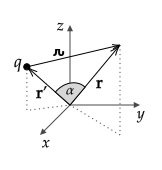

For a single point charge q at r′, the potential at any location in space is
V(r)=kԉq=∣r−r′∣q
Often we are interested in an approximation of this potential at points that are far away.
Previously, the binomial expansion was used to find the electric field for point charges along an axis and only at locations on the same axis. The same approximation procedure that is used for the electric field may be used for potential. (In general, it is often easier to start with finding the scalar V and then using it to find the vector E.)
In the following, a general equation for potential at any location in space due to a point charge at any location in space is developed by considering two generalizations:
finding the potential at any location in space due to a point charge on the z–axis and then
finding the potential at any location in space due to a point charge at any location in space.
Using the definition δ=−2rz′cosθ+r2z′2, this can be written (after some algebra) as
V=rkq[1+rdcosθ+(rd)2(23cos2θ−1)+…]
where the … terms are proportional to (d/r)3, (d/r)4, …. When only the term proportional to (d/r)2 is kept, the result is referred to as “V to second order in d/r”. Equivalently, one can say that this is V to third order in 1/r (after multiplying through by 1/r, the highest power of 1/r is 1/r3) .
If r′=y′y^, find an equation for V(r,θ,ϕ) to second order in d/r.
Check your answer by plugging in θ=π/2 and ϕ=π/2 so that r=y. For y≫y′, does your equation match the expected potential from approximating V(y)=kq/∣y−y′∣ for y≫y′?
When both the charge and point of interest are at arbitrary locations in space, the angle between r and r′ is no longer the spherical polar angle, θ. In this case, the angle α between them will depend on both θ and ϕ. From the definition of the dot product, cosα is given by
cosα=∣r∣∣r′∣r⋅r′=rr′r⋅r′

To derive an expansion for this configuration, the same steps used in Generalization I can be used but with the replacement of z′ with r′ and θ with α. With this replacement, we have
V=rkq[1+rr′cosα+(rr′)2(23cos2α−1)+…]
The angle–dependent terms that are multiplied by the powers of r′/r are related to the Legendre polynomials. These polynomials also appear in the solution to Laplace’s equation in spherical coordinates. Labeling these terms as P0, P1, …, and including their functional dependence on cosα gives
where the first three terms are P0=1, P1=cosα, P2=(3cos2α−1)/2. To write these terms as Legendre poloynomials, use the definition u=cosα so that P0=1, P1=u, and P2=(3u2−1)/2.
to find the potential due to a point charge at z=d to third order in d/r.
Answer
In this case, r′=dz^ and r′=d, so
cosα=rr′r⋅r′=rdzd=rz
from which we conclude that α=θ, as expected. To third order in d/r,
V=rkq[P0+rdP1+(rd)2P2+(rd)3P3]
where the first three terms given earlier are P0=1, P1=cosθ, P2=(3cos2θ−1)/2. The P3 term can be found in a table of Legendre polynomials. It is P3=(5u3−3u)/2, so P3=(5cos3θ−3cosθ)/2. Using these,